Chap2 拉伸、压缩与剪切 ¶
小结
正应力公式与伸长量公式
其中，只有杆件横截面上正应力均匀分布时，正应力公式才成立；只有轴向方向均匀变形时，伸长量公式才成立
对于不均匀问题，应当化为一系列均匀问题的叠加
注意
我们对截面上的微元进行考察时，由于微元取得很小，实际上就是过一点处不同方向面的应力。因此，当论及应力时，必须指明是哪一点处、哪一个方向面上的应力
轴向拉伸或压缩时横截面上的内力和应力 ¶
当所有外力均沿杆的轴线方向作用时，杆的横截面上只有沿轴线方向的一个内力分量，这个内力分量称为轴力（normal force
习惯上，把拉伸时的轴力规定为正，压缩时的轴力规定为负
例 2.1
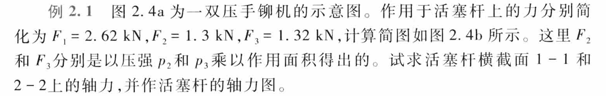
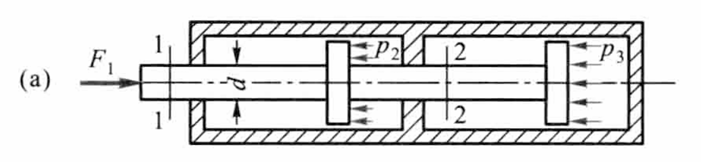
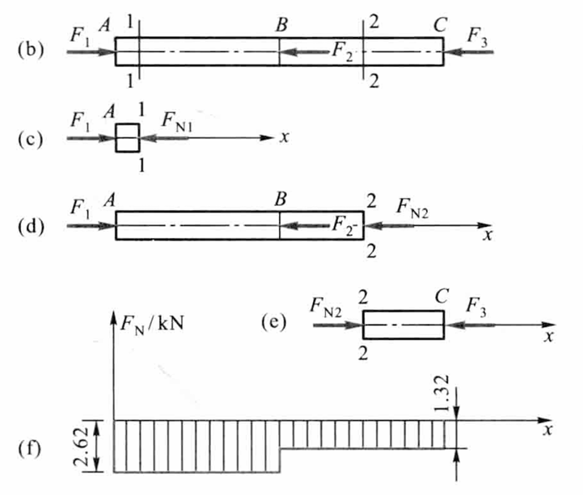
不难分析出轴力的突变与平衡外力的关系
当外力沿着杆件的轴线作用时，与轴力相对应，杆件横截面上将只有正应力
杆件在轴力作用下产生均匀的伸长或缩短变形。因此，根据材料均匀性的假定，杆件横截面上的应力均匀分布，正应力满足
关于正应力的符号，一般规定拉应力为正，压应力为负
导出此公式时，要求外力合力与杆件轴线重合，如此才能保证各纵向纤维变形相等，横截面上正应力均匀分布。若轴力沿轴线变化，可先作出轴力图，再由公式求出不同横截面上的应力。当截面的尺寸也沿轴线变化时，只要变化缓慢，外力合力与轴线重合，公式仍可使用，写成
直杆轴向拉伸或压缩时斜截面上的应力 ¶
考虑斜截面上的应力，设与横截面成 \(\alpha\) 角的斜截面 \(k-k\) 的面积为 \(A_\alpha\)，有
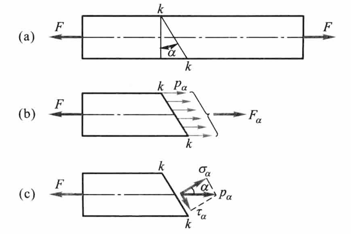
沿斜截面 \(k-k\) 假想地把杆件分成两部分，以 \(F_\alpha\) 表示斜截面上的内力，可知
不难得出斜截面上的应力分布也是均匀分布的，有
记外力与轴线重合时的正应力为 \(\sigma=\frac{F}{A}\)，即有
将应力 \(p_\alpha\) 分解成垂直于斜截面的正应力 \(\sigma_\alpha\) 和相切于斜截面的切应力 \(\tau_\alpha\)
当 \(\alpha=0\) 时，\(\sigma_\alpha\) 达到最大值，且
当 \(\alpha=45^\circ\) 时，\(\tau_\alpha\) 达到最大值，且
可见，轴向拉伸（压缩）时，在杆件的横截面上，正应力为最大值；在与杆件轴线成 \(45^\circ\) 的斜截面上，切应力为最大值。最大切应力在数值上等于最大正应力的二分之一
材料拉伸时的力学性能 ¶
材料的力学性能也称为机械性质，是指材料在外力作用下表现出的变形、破坏等方面的特性
低碳钢的屈服与最大切应力有关，铸铁的拉断与最大正应力有关
进行拉伸实验，首先根据国家标准将被试验材料制成标准试样（standard specimen
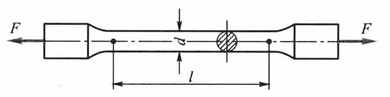
低碳钢拉伸时的力学性能 ¶
低碳钢是指含碳量在 0.3% 以下的碳素钢
低碳钢拉伸时的力学性能
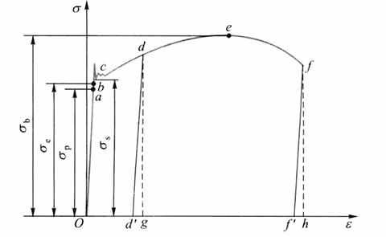
-
弹性阶段（弹性变形）
- 比例极限：\(\sigma_p\) ，只有应力低于比例极限，应力才与应变成正比，材料才满足胡克定律 \(\sigma = E \varepsilon\)，这时称材料是线弹性的
- 弹性极限：\(\sigma_e\)，出现弹性变形的极限值
- 应力超过弹性极限后，如再解除拉力，则变形的一部分随之消失，称为弹性变形，遗留下的不能消失的变形称为塑性变形或残余变形
-
屈服阶段（塑性变形）
- 屈服 / 流动：应力基本保持不变，应变显著增加
- 下屈服极限 / 屈服极限 / 屈服强度：\(\sigma_s\)
- 滑移线：表面与轴线出现大致成 45° 倾角的条纹，是材料内部相对滑移形成
- 可见屈服现象的出现与最大切应力有关
- 强化阶段（弹性变形 + 塑性变形）
- 强化：过屈服阶段后，材料又恢复抵抗变形的能力
- 强度极限 / 抗拉强度：\(\sigma_b\)
- 局部变形阶段
- 缩颈：在某局部范围内，横向尺寸急剧缩小
试样拉断后，由于保留塑性变形，试样标距由原来的 \(l\) 变为 \(l_1\)，有伸长率
根据伸长率，材料可分为：\(\delta > 5\%\) 的塑性材料，如低碳钢；\(\delta < 5\%\) 的脆性材料，如铸铁
原始横截面面积为 \(A\) 的试样，拉断后缩颈处的最小截面面积变为 \(A_1\)，有断面收缩率
伸长率和断面收缩率都是衡量材料塑性的指标
卸载定律
如将试样拉到超过屈服极限的 \(d\) 点，然后逐渐卸载拉力，应力和应变关系将沿着斜直线 \(dd'\) 回到 \(d'\) 点。斜直线近似地平行于 \(Oa\)。这说明：在卸载过程中，应力和应变按直线规律变化，即卸载定律
拉力完全卸除后，应力 - 应变图中，\(d'g\) 表示消失了的弹性变形，而 \(Od'\) 表示不再消失的塑性变形
冷作硬化
第二次加载时，其比例极限（亦即弹性阶段）得到提高，但塑性变形和伸长率却有所降低，这种现象称为冷作硬化。冷作硬化现象经退火后又可消除
工程上常利用冷作硬化提高材料的弹性阶段
其他塑性材料拉伸时的力学性能 ¶
对没有明显屈服极限的塑性材料如铝合金，可以将产生 \(0.2\%\) 塑性应变时的应力作为屈服指标，称为规定塑性延伸强度或条件屈服应力（offset yield stress
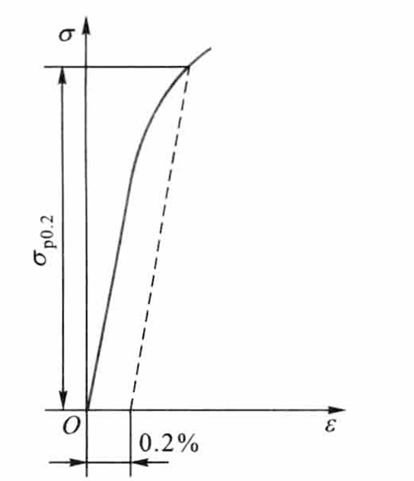
各类碳素钢中，随含碳量的增加，屈服极限和强度极限相应提高，但伸长率降低
铸铁拉伸时的力学性能 ¶
灰口铸铁拉伸时的应力 - 应变关系是一段微弯曲线，是典型的脆性材料
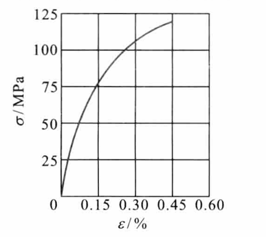
在较低的拉应力下，可近似地认为服从胡克定律。通常取 \(\sigma-\varepsilon\) 曲线的割线代替曲线的开始部分，并以割线的斜率作为弹性模量，称为割线弹性模量
铸铁拉断时的最大应力即为其强度极限。因为没有屈服现象，强度极限 \(\sigma_b\) 是衡量强度的唯一指标
材料压缩时的力学性能 ¶
低碳钢压缩时的弹性模量 \(E\) 和屈服极限 \(\sigma_s\) 都与拉伸时大致相同。屈服阶段以后，试样抗压能力继续增强，因此得不到压缩时的强度极限
铸铁压缩时，试样仍然在较小的变形下突然破坏。破坏断线的法线与轴向大致成 \(45^\circ\sim 55^\circ\) 的倾角，表明试样沿斜截面因相对错动而破坏。铸铁的抗压强度比其抗拉强度高 \(4\sim5\) 倍
脆性材料抗拉强度低，塑性性能差，但抗压能力强，宜于作为抗压构件的材料
衡量材料力学性能的指标主要有：比例极限（或弹性极限）\(\sigma_p\)、屈服极限 \(\sigma_s\)、强度极限 \(\sigma_b\)、弹性模量 \(E\)、伸长率 \(\delta\)、断面收缩率 \(\psi\)
失效、安全因数和强度计算 ¶
断裂和出现塑性变形统称为失效
脆性材料断裂时的应力是强度极限 \(\sigma_b\)，塑性材料到达屈服时的应力是屈服极限 \(\sigma_s\)，这两者都是构件失效时的极限应力或称危险应力（critical stress）
在载荷作用下构件的实际应力 \(\sigma\)（称为工作应力
对塑性材料
对脆性材料
其中，\(n_s\) 和 \(n_b\) 称为安全因数
许用应力 \([\sigma]\) 与杆件的材料力学性能以及工程对杆件安全裕度的要求有关，为构件工作应力的最高限度，即有构件轴向拉伸或压缩的强度条件为
上式称为拉伸或压缩杆件的强度设计准则（criterion for strength design
根据以上强度条件，即可进行强度校核、截面设计和确定许可载荷（allowable load）
以圆截面杆为例
强度校核
设计圆截面直径
许可载荷
例 2.3
图为一悬臂吊车的简图，斜杆 AB 为直径 \(d=20\text{mm}\) 的钢杆，载荷 \(W=15\text{kN}\)。当 \(W\) 移到 \(A\) 点时，求斜杆 \(AB\) 横截面上的应力。若钢材的许用应力 \([\sigma]=150\text{MPa}\)，试对斜杆 AB 进行强度校核
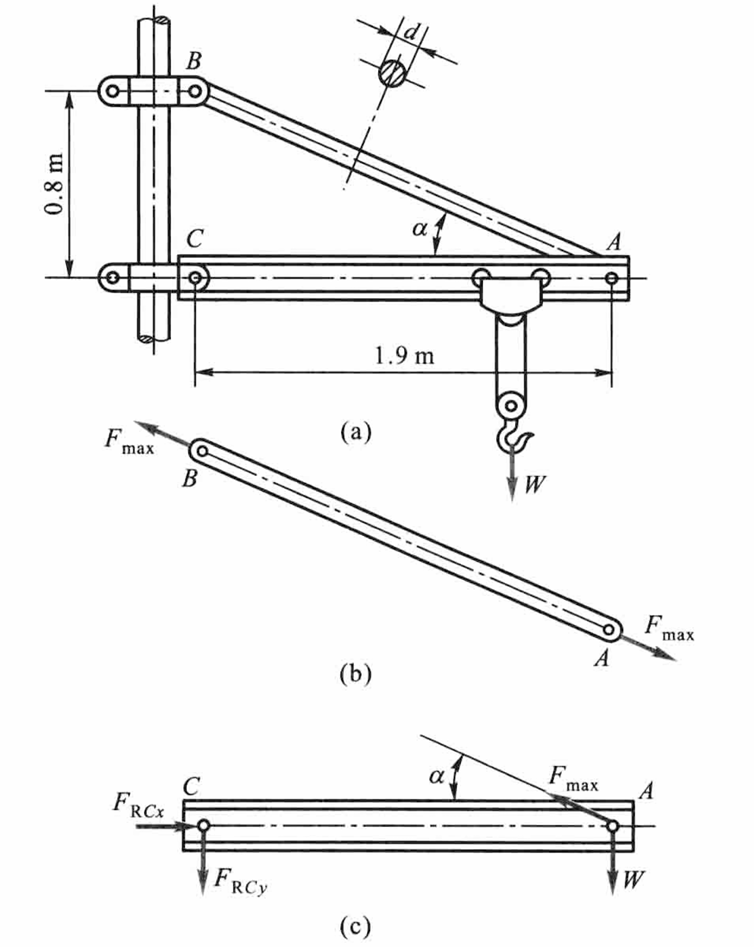
根据横梁的平衡方程 \(\sum M_C=0\)，得
由直角三角形 ABC 求出
故有
斜杆 AB 的轴力为
AB 杆横截面上的应力为
斜杆满足强度条件
轴向拉伸或压缩时的变形 ¶
轴向变形 ¶
当应力不超过材料的比例极限时，应力与应变成正比，即胡克定律
EA 称为杆件的抗拉（抗压）刚度
我们之前给出的公式适用于杆件横截面面积和轴力皆为常量的情况。若杆件横截面沿轴线变化，但变化缓慢；轴力也沿轴线变化，但作用线仍与轴线重合，此时，可用相邻的横截面从杆中取出长为 \(\mathrm{d}x\) 的微段，其伸长为
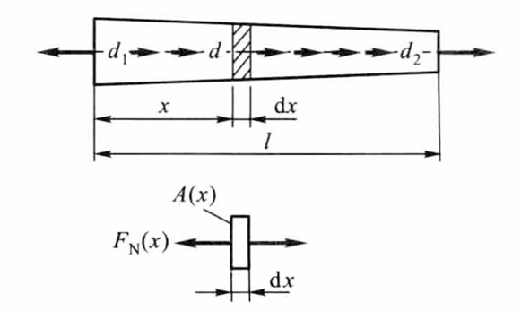
积分得杆件的伸长为
更一般的情形
如功能梯度材料，其成分和结构呈连续梯度变化
横向变形 ¶
若杆件变形前的尺寸为 \(b\)，变形后为 \(b_1\)，则横向应变为
试验结果表明：当应力不超过比例极限时，横向应变与轴向应变之比是一个常数
\(\mu\) 称为横向变形因数或泊松比（Poisson ratio
由热力学原理可以给出各向同性材料 \(\mu\) 的取值范围是
对于常规、传统的材料，有 \(0<\mu<1/2\)；当 \(\mu=1/2\) 时，材料在变形过程中体积将保持不变，称为不可压缩材料；当 \(\mu=0\) 时，材料在变形过程中横向尺寸将保持不变；当 \(-1<\mu<0\) 时，出现杆件伸长时横向增大的现象，这种材料称为负泊松比材料或拉胀材料
轴向拉伸或压缩的应变能 ¶
固体在外力作用下，因变形而储存的能量称为应变能
现在讨论轴向拉伸或压缩时的应变能。作用于杆件上的力 \(F\) 因位移 \(\mathrm{d}(\Delta l)\) 而作功，且所作的功为
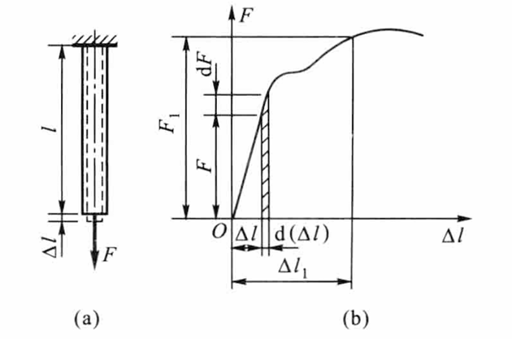
在应力小于比例极限的范围内，\(F\) 与 \(\Delta l\) 的关系是一斜直线，故有
根据功能原理，拉力所完成的功应等于杆件获得的能量。忽略动能、热能等能量的变化，即有在线弹性范围内
为了求出单位体积内的应变能，设想从构件中取出边长为 \(\mathrm{d}x,\mathrm{d}y,\mathrm{d}z\) 的单元体
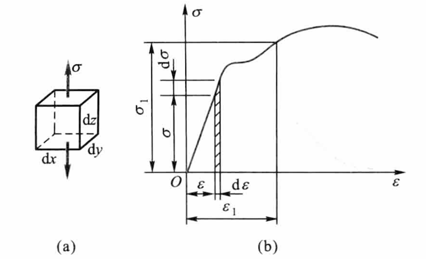
应变能密度即单位体积内的应变能为
在应力小于比例极限的情况下，\(\sigma\) 与 \(\varepsilon\) 的关系为斜直线，有
杆件的应变能为
拉伸、压缩超静定问题 ¶
杆件的轴力可由静力平衡方程求出，称为静定问题；若不能全由静力平衡方程求出，称为超静定问题或静不定问题
未知力的个数减去静力平衡方程的个数就是超静定的次数
一方面，多余约束使结构由静定变为静不定，问题由静力平衡可解变为静力平衡不可解；另一方面，多余约束对结构或构件的变形起一定限制作用，而结构或构件的变形又与受力密切相关，这就为求解静不定问题提供补充条件
各构件变形之间的关系，或者构件各部分变形之间的关系，称为变形协调关系或变形协调条件（compatibility relations of deformation
超静定问题综合静力方程、变形协调方程（几何方程
温度应力和装配应力 ¶
温度应力 ¶
静定结构由于可以自由变形，当温度均匀变化时，不会引起构件的内力；但在超静定结构中，因变形受到部分或全部约束，温度变化时，往往会引起内力，称为热应力或温度应力
装配压力 ¶
对静定结构，加工误差仅造成结构几何形状的轻微变化，不会引起内力；但对超静定结构，加工误差往往会引起内力，称为装配应力
应力集中的概念 ¶
在零件尺寸突然改变处的横截面上，应力并不是均匀分布的。这种因杆件外形突然变化，而引起局部应力急剧增大的现象，称为应力集中（stress concentration）
圣维南原理
如果杆端两种外加力静力学等效，则距离加力点稍远处，静力学等效对应力分布的影响很小，可以忽略不计
设发生应力集中的截面上的最大应力为 \(\sigma_{\max}\)，同一截面上的平均应力为 \(\sigma\)，则称其比值
为理论应力集中系数（factor of stress concentration
实验结果表明：截面尺寸变化越急剧、角越尖、孔越小，应力集中的程度就越严重
剪切和挤压的实用计算 ¶
剪切面平行于剪力，而挤压面垂直于剪力
剪切的使用计算 ¶
剪切的特点是：作用于构件某一截面两侧的力，大小相等，方向相反，且相互平行，使构件的两部分沿这一截面（剪切面）发生相对错动的变形
工程中的连接件，如螺栓、铆钉、销钉、键等都是承受剪切的构件
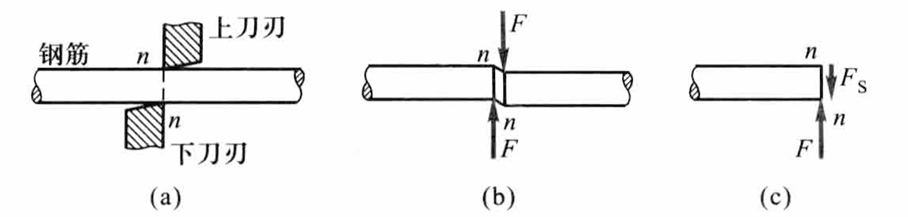
切应力及相应强度条件为
挤压的实用计算 ¶
在外力作用下，连接件和被连接的构件之间，必将在接触面上相互压紧，这种现象称为挤压
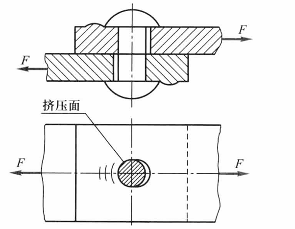
挤压应力及相应强度条件为
实用计算中，以圆孔或圆钉的直径平面面积 \(\delta d\) 除挤压应力 \(F\)，则所得应力大致与实际最大应力接近
评论区